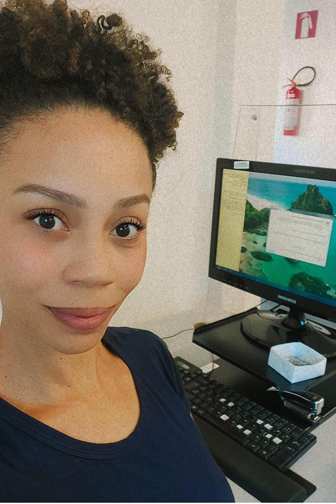

Sobre mim
Iniciei minha carreira no administrativo, mas sempre fui apaixonada por tecnologia. Foi então que decidi
cursar Redes de Computadores na Faculdade Anhanguera. Meu trabalho de conclusão de curso foi a criação
de um projeto de redes para o prédio da Receita Federal, sediada no município de Campinas. Após me
formar e sem fazer nenhum curso de especialização, tive muita dificuldade em ingressar no mercado de
trabalho. Neste momento, tive que fazer uma escolha: retornar ao administrativo.
Em 2022, recebi a notícia de que havia sido aberto o concurso para o IMA e UNICAMP, duas empresas
públicas referência no município. Decidi então voltar aos estudos depois de muito tempo parada e fui
aprovada. No IMA, passei em 2º lugar, e na UNICAMP, em 45º lugar. Foi neste momento que decidi que
poderia sim retornar à tão sonhada área. Em 2022, iniciei o curso técnico em Análise e Desenvolvimento
de Sistemas e continuei meus estudos para concursos públicos. Agora, em 2023, iniciei mais duas
formações:
Formação em Front-End pela Oracle em parceria com a Alura.
Formação em Cibersegurança pela Rede Nacional de Ensino e Pesquisa (RNP) e o SENAI-SP.
Pretendo continuar me aperfeiçoando e, futuramente, iniciar uma pós-graduação. Atualmente, trabalho na
Prefeitura de Campinas e em abril deste ano, iniciarei meu estágio na UNICAMP, considerada a segunda
melhor universidade do Brasil e da América Latina. Estou feliz pela oportunidade conquistada e ansiosa
para enfrentar mais um desafio.
